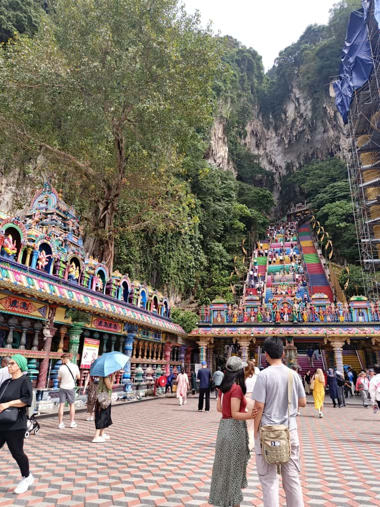

Alcanzando al pueblo malayo con el mensaje de esperanza.
Habitantes en la Nación
Población Musulmana
Población Cristiana
Nuestra labor está enfocada específicamente en el pueblo malayo. Aunque Malasia es una nación multicultural, este grupo representa el núcleo de la identidad del país y, a su vez, uno de los desafíos misioneros más grandes del Sudeste Asiático.
Entendemos que para alcanzar al pueblo malayo es necesario un compromiso profundo con su lengua, sus costumbres y un respeto absoluto por su identidad. No vamos como extranjeros distantes, sino como servidores que buscan establecer puentes de confianza a través de la convivencia diaria y un evangelismo netamente relacional.

Operando desde la capital para alcanzar al corazón de la nación.
Oramos por una conexión espiritual ininterrumpida y el favor de Dios sobre cada actividad en Malasia.
Para que las personas que conozcamos tengan la disposición de escuchar y recibir el mensaje con alegría.
Que se abran hogares para compartir la mesa, construir amistades profundas y mostrar el amor de Dios.
Por dirección clara en cada viaje, trámite legal y decisión estratégica que debamos tomar.
Para servir con generosidad a la comunidad local y estar listos para dar lo que Dios ponga en nuestras manos.